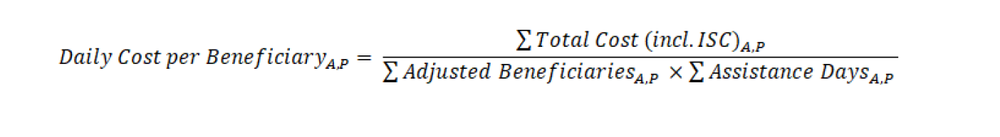

L’unité RAM en collaboration avec les unités de Supply Chain & BPU du bureau régional du PAM de Dakar a conduit une analyse conjointe pour comprendre les effets de la réduction des rations due à la réduction des fonds ces dernières années dans un contexte de volatilité économique. Cette analyse s’aligne sur le guide méthodologique développé par le siège Coût par bénéficiaire et intensité de l’assistance en May 2022. Cette analyse similaire pour calculer le coût de l’inaction en Afrique de l’Est a été faite. En 2022, 29,9 millions de personnes en situation d’insécurité alimentaire aiguë - près de 70% des personnes en situation d’insécurité alimentaire aiguë n’ont pas reçu d’assistance du PAM. Même avec la réponse des gouvernements, 40 % des besoins restent non satisfaits. La méthodologie s’aligne sur la même approche mais avec quelques analyses complémentaires pour comprendre ce qui arrive spécifiquement en termes de nourriture ou de cash aux bénéficiaires après la déduction des différents coûts d’opérations.
Il existe un décalage entre les rapports financiers et les rapports sur les résultats/produits (rapport de distribution) qui empêchent le PAM d’analyser avec précision les résultats des activités en ce qui concerne les ressources allouées. Pour capturer le coût par ration et par bénéficiaire, les dépenses doivent être dégroupées. Dans l’analyse, nous avons considéré la valeur des quantités distribués sur la base des rapports de distribution.
Les différentes sources de données sont les suivantes:
Distributed quantities (Food MT and Cash-Based Transfers USD): COMET/DOTS
Budget: Funding outlook from the Management plan
Expenditures: WINGS FM System
Beneficiaries: COMET Needs-Based Plan (ACR figures)
Assistance days: COMET
Nutritional Values: NutVal application
Food baskets (equivalent of the value of assistance in kcal)
Food security outcomes (FCS)
CH data
Les procédures d’analyse et désagrégation sont détaillées ci-dessous pour atteindre les résultats de l’analyse.
N.B.: Il faut noter que ce sont les données sur les URT1 (Unconditional Resource Transfer 1) qui ont été principalement utilisées pour conduire cette analyse.
Les données de ce fichier ont été fournies par BPU (Expenditures: WINGS FM System). Dans cette base il s’agira de sélectionner les variables pays, Année, modalité d’intervention et dépenses. Ensuite on transpose la colonne modalité pour considérer chaque modalité d’intervention comme une variable de la base. Comme indiqué dans le dossier de référence du siège il s’agira de calculer les dépenses total Food et les dépenses total CBT value. Pour ce qui est du total Food on commencera par additionner les variables Food Value, Food Transfer Cost, FTC External Transport et Cargo Preference. (total_cost_food = Food Value + Food Transfer Cost + FTC External Transport +Cargo Preference)
Par la suite il s’agira de calculer le ISC (Indirect Support Cost) qui représente 6.65% des implémentations. Il y aura ainsi dans la base ISC Food et les ISC cbt. Au final on aura la somme de total_cost_food plus total implémentation Food plus total ISC food. La même procédure a été faite pour la CBT value.
expenditure <- read.csv("Final data used/last data expenditure 2019 2022.csv")
expenditure <- expenditure |> filter(
Fiscal.Year %in% c(2019:2022)
)
expenditure3 <- expenditure |> select(
Country, Fiscal.Year, Modality, Expenditures..USD.
)
expenditure3 <- expenditure3 |> group_by(
Country, Fiscal.Year,Modality,
) |> summarise(expend = sum(Expenditures..USD.))## `summarise()` has grouped output by 'Country', 'Fiscal.Year'. You can override
## using the `.groups` argument.expenditure4 <- expenditure3 |> pivot_wider(
names_from = Modality, values_from = expend
)
# calcul total food cost
expenditure4 <- expenditure4 |> mutate(
`Food Value` = case_when(
is.na(`Food Value`) ~ 0,
TRUE~ `Food Value`
),
`Food Transfer Cost` = case_when(
is.na(`Food Transfer Cost`) ~ 0,
TRUE~ `Food Transfer Cost`
),
`FTC External Transport` = case_when(
is.na(`FTC External Transport`) ~ 0,
TRUE ~ `FTC External Transport`
),
`Cargo Preference` = case_when(
is.na(`Cargo Preference`) ~ 0,
TRUE ~ `Cargo Preference`
)
) |> mutate(
total_cost_food = `Food Value` + `Food Transfer Cost` + `FTC External Transport` +`Cargo Preference`)
#remetre les NA
expenditure4 <- expenditure4 |> mutate(
`Food Value` = case_when(
`Food Value` == 0 ~ NA,
TRUE~ `Food Value`
),
`Food Transfer Cost` = case_when(
`Food Transfer Cost` == 0 ~ NA,
TRUE~ `Food Transfer Cost`
),
`FTC External Transport` = case_when(
`FTC External Transport` == 0 ~ NA,
TRUE ~ `FTC External Transport`
),
`Cargo Preference` = case_when(
`Cargo Preference` == 0 ~ NA,
TRUE ~ `Cargo Preference`
)
)
expenditure4 <- expenditure4 |> rename(
Year = "Fiscal.Year"
) |> relocate(
c(`Food Value`,`Food Transfer Cost`,`Cargo Preference`), .after = `FTC External Transport`
)
expenditure4 <- expenditure4 |> relocate(
`FTC External Transport`, .after = `Food Transfer Cost`
)
expenditure4 <- expenditure4 |> relocate(
total_cost_food, .after = `Cargo Preference`
)
expenditure4 <- expenditure4 |> relocate(
Implementation, .after = `Service Delivery`
)
expenditure4 <- expenditure4 |> mutate(
`CBT CV Value` = case_when(
is.na(`CBT CV Value`) ~ 0,
TRUE~ `CBT CV Value`
),
`CBT CV Transfer Cost` = case_when(
is.na(`CBT CV Transfer Cost`) ~ 0,
TRUE~ `CBT CV Transfer Cost`
)
) |> mutate(
total_cost_CBT = `CBT CV Value` + `CBT CV Transfer Cost` )
expenditure4 <- expenditure4 |> mutate(
`CBT CV Value` = case_when(
`CBT CV Value` == 0 ~ NA,
TRUE~ `CBT CV Value`
),
`CBT CV Transfer Cost` = case_when(
`CBT CV Transfer Cost` == 0 ~ NA,
TRUE ~ `CBT CV Transfer Cost`
)
)
expenditure4 <- expenditure4 |> relocate(
`CBT CV Value`, .before = `CBT CV Transfer Cost`
)
expenditure4 <- expenditure4 |> mutate(
all_modalities_cost = total_cost_food + total_cost_CBT
) |> relocate(all_modalities_cost, .before = Implementation)
expenditure4 <- expenditure4 |> mutate(
food_cost_percent = round((total_cost_food/all_modalities_cost),3),
CBT_cost_percent = round((total_cost_CBT/all_modalities_cost),3)
) |> relocate(
food_cost_percent, .after = total_cost_food
) |> relocate(
CBT_cost_percent, .after = total_cost_CBT
)
expenditure4 <- expenditure4 |> mutate(
Implementation_food = food_cost_percent * Implementation,
Implementation_CBT = CBT_cost_percent * Implementation
) |> relocate(
c(Implementation_food,Implementation_CBT), .after = Implementation
)
# cost food et cbt + implementation food et cbt
expenditure4 <- expenditure4 |> mutate(
total_cost_implementation_food = total_cost_food + Implementation_food,
total_cost_implementation_CBT = total_cost_CBT + Implementation_CBT
)
# ISC food et cbt
expenditure4 <- expenditure4 |> mutate(
isc_food = total_cost_implementation_food*0.065,
isc_CBT = total_cost_implementation_CBT*0.065
)
# total cost + ISC
expenditure4 <- expenditure4 |> mutate(
total_cost_final_food = total_cost_implementation_food + isc_food,
total_cost_final_CBT = total_cost_implementation_CBT + isc_CBT
)Dans la base expenditure les pays ne sont pas classé par région c’est à dire pays costal, Sahel etc… Donc pour prendre en compte cette classification une petite base a été créer afin de l’ajouter dans les bases ou il n’yen aura pas
group_country <- data.frame(
stringsAsFactors = FALSE,
Country = c("Benin","Burkina Faso","Cameroon",
"Cape Verde","Central African Republic","Chad",
"Cote d'Ivoire","Gambia","Ghana",
"Guinea","Guinea-Bissau","Liberia",
"Mali","Mauritania","Niger","Nigeria",
"Sao Tome and Principe","Senegal",
"Sierra Leone","Togo"),
Group = c("Coastal","Sahel","CAR/CMR/NGA","Coastal",
"CAR/CMR/NGA","Sahel","Coastal",
"Coastal","Coastal","Coastal","Coastal",
"Coastal","Sahel","Sahel","Sahel",
"CAR/CMR/NGA","Coastal","Coastal",
"Coastal","Coastal")
)Dans la base bénéficiaire trois variables ont été renommées Actual.Food., Actual.CBT. et Actual.Total.
beneficiaire <- read.xlsx("Final data used/New_data_benef_06_07_2023.xlsx",sheetName = 1)
# )
# renommer les variables de beneficiaires
beneficiaire_urt <- beneficiaire |> rename(
benef_food = Actual.Food.,
benef_CBT = Actual.CBT.,
total_beneficiaries = Actual.Total.
)Dans cette base commodité provenant de supply chaîne nous avons les commodités distribués, les quantités en métric tonne et la valeur total par commodité. Pour Calculer le cost of inaction comme indiqué dans la formule ci-dessous  nous avons utilisé le total cost en terme de Kcal et pour cela nous allons d’abord chercher les équivalents des commodités dans la base Nut val pour avoir les Kcal de chaque modalité de la base. Nous allons copier les variables de la base commodité dans un fichier excel vide que nous allons sauvegarder sous le nom equivalent après avoir ajouté les équivalents de chaque modalité à partir de la base nutrition puis nous allons faire une rechercheV pour ajouter les équivalents en kcal de chaque modalité. Cependant il faut noter que les kcal obtenus sont par 100g de chaque modalité et viennent du logiciel Nut val
commodities <- read.xlsx("Final data used/commodity last.xlsx",sheetName = 1)
# regrouper par commodité
commodities2 <- commodities |> dplyr::group_by(
Country_Name, Group, Document_Year,Commodity_Name
) |> summarise(
Tot_qtityMT = sum(SUM_of_Distributed_Quantity_MT, na.rm = TRUE),
# Cmdty_Price_USD = mean(Cmdty_Price_USD, na.rm=TRUE),
Tot_Value_distributed = sum(SUM_of_Cmdty_value_distributed, na.rm = TRUE)
)## `summarise()` has grouped output by 'Country_Name', 'Group', 'Document_Year'.
## You can override using the `.groups` argument.# importer la base dans laquelle nutval pour avoir les équivalents Kcal
equivalent <- read.xlsx("Final data used/equivalent.xlsx", sheetName = 1)
nutriton <- read.xlsx("Final data used/nutrition.xlsx",sheetName = 1)
commodities3 <- commodities2 |> mutate(
var_equivalent = vlookup(lookup_column = "Commodity_Name",dict = equivalent,result_column = "equivalent",lookup_value = Commodity_Name )
) |> mutate(
kcal = vlookup(lookup_column = "Food.Commodities.and.Products",dict = nutriton,result_column = "kcal",lookup_value = var_equivalent )
)
commodities3 <- commodities3 |>
rename(
Country = Country_Name,
Year = Document_Year
)Cette base est utilisée pour faire des analyses suplémentaires. Dans cette base nous avons le score de consommation alimentaire acceptable des pays. Pour avoir le score de consommation alimentaire pauvre plus limite il faut faire la différence 100 moins la valeur du score FCS acceptable.
Dans cette partie il s’agira également d’importer la base pour avoir l’assiantance days food et l’assistance day cbt
fcs <- read.xlsx("Final data used/FCS Acceptable.xlsx",sheetName = 1)
fcs <- fcs |> select(Country, everything())
fcs <- fcs |> mutate(
# FCS_acceptable = round(Acceptable.FCS,2)
FCS_poor_borderline = round((100 - Acceptable.FCS),2)
) |> select(-Acceptable.FCS)
fcs$Year <- as.numeric(fcs$Year)
## Assistance days
assistance_food <- read.xlsx("Final data used/Assistance_days (2).xlsx",sheetName = 1)
assistance_cash <- read.xlsx("Final data used/Assistance_days (2).xlsx",sheetName = 2)
assistance_cash$Year <- as.numeric(assistance_cash$Year)Dans cette partie il s’agira de joindre les bases bénéficiaires, expenditures, commodité et fcs. Pour Procéder à la jointure des fichiers on prendra comme variable de référence les variables, pays, année et group. Il faut aussi noter que les pays tels que Senegal, CAR, Guinée bissau, Liberia et Ghana n’apparaissent pas dans la base commodité pour l’activité URT1 donc il faudra calculer les kcal pour les pays dont les commodités sont renseignés puis ajouter ces 5 pays dans la base avec valeurs manquantes pour le Kcal comme indiqué dans la syntax ci-dessous Pour avoir les Kcal des modalités il faudra prendre en compte que le logiciel Nut val donne les kcal pour 100g alors que notre base commodité contient des données en Metric tonne. (1MT = 1000000g). *Pour avoir les kcal on multiplie la variable **Tot_qtityMT par 10000 et par le kcal correspondant de la commodité* .
Par exemple pour si pour 100g de manioc le kcal correspondant est 15. combien de Kcal faut-il pour 20Mt de manioc il suffira de faire une règle de trois et faire 20 * 10000 * 15 ce qui fera 3000000 kcal pour les 20MT.
beneficiaire_urt$Year <- as.numeric(beneficiaire_urt$Year)
# jointure beneficaire et expenditure
benef_expend <- beneficiaire_urt |> left_join(
expenditure4, by = c("Country","Year")
)
benef_expend2 <- benef_expend |> mutate(
Group = maditr::vlookup(lookup_column = "Country",dict = group_country,result_column = "Group",lookup_value = Country
)
)
benef_expend2 <- benef_expend2 |> relocate(
Group, .after = "Country"
)
#différence entre les deux datasests
setdiff(unique(commodities3$Country), unique(benef_expend2$Country))## character(0)setdiff(unique(benef_expend2$Country),unique(commodities3$Country))## [1] "Central African Republic" "Ghana"
## [3] "Guinea-Bissau" "Liberia"
## [5] "Senegal" NAbenef_expend_assist <- benef_expend2 |> left_join(
assistance_food, by = c("Country","Group","Year")
)
benef_expend_assist <- benef_expend_assist |> left_join(
assistance_cash, by = c("Country","Group","Year")
)
benef_expend_assist_fcs <- benef_expend_assist |> left_join(
fcs, by = c("Country","Group","Year")
)
setdiff(unique(commodities3$Country), unique(benef_expend_assist_fcs$Country))## character(0)setdiff(unique(benef_expend_assist_fcs$Country),unique(commodities3$Country))## [1] "Central African Republic" "Ghana"
## [3] "Guinea-Bissau" "Liberia"
## [5] "Senegal" NAall_country <- unique(benef_expend2$Country)
missing_in_commodities3 <- c("Central African Republic","Senegal","Guinea-Bissau","Liberia",
"Ghana")
country_in_commodities3 <- all_country[!(all_country %in% missing_in_commodities3)]
benef_expend_assist_fcs2 <- benef_expend_assist_fcs |> filter(
Country %in% country_in_commodities3
)
benef_expend_assist_fcs3 <- benef_expend_assist_fcs |> filter(
Country %in% missing_in_commodities3
)
#Jointure commodities et autres bases
commo_benef_exp_days_FCS <- commodities3 |> left_join(
benef_expend_assist_fcs2, by = c("Country","Group","Year")
)## Warning in left_join(commodities3, benef_expend_assist_fcs2, by = c("Country", : Detected an unexpected many-to-many relationship between `x` and `y`.
## ℹ Row 268 of `x` matches multiple rows in `y`.
## ℹ Row 2 of `y` matches multiple rows in `x`.
## ℹ If a many-to-many relationship is expected, set `relationship =
## "many-to-many"` to silence this warning.# ajouter les pays manquants à la base
setdiff(names(commo_benef_exp_days_FCS), names(benef_expend_assist_fcs3))## [1] "Commodity_Name" "Tot_qtityMT" "Tot_Value_distributed"
## [4] "var_equivalent" "kcal"benef_expend_assist_fcs3 <- benef_expend_assist_fcs3 |> mutate(
Commodity_Name = NA,Tot_qtityMT = NA,Tot_Value_distributed = NA,var_equivalent = NA,
kcal = NA
)
commo_benef_exp_days_FCS <- commo_benef_exp_days_FCS |> bind_rows(
benef_expend_assist_fcs3
)
commo_benef_exp_days_FCS <- commo_benef_exp_days_FCS |> mutate(
total_kcal = round(Tot_qtityMT * 10000 * kcal,2)
)
commo_benef_exp_days_FCS <- commo_benef_exp_days_FCS |> relocate(
total_kcal, .after = Tot_qtityMT
)Dans cette partie il s’agira de calculer les indicateurs tels que le daily_CpB_food et le daily_CpB_CBT en utilisant la formule indiquée par HQ et présenté dans la partie du traitement de la base Commodité.
La base finale regroupant toutes les variables est nommée final_data_COI.
#daily cost per beneficiary food
final_dataset_COI <- commo_benef_exp_days_FCS |> mutate(
daily_CpB_food = round(total_cost_final_food/(benef_food*assistance_days_food_2),2)
)
final_dataset_COI <- final_dataset_COI |> mutate(
daily_CpB_CBT = round(total_cost_final_CBT/(benef_CBT*assistance_days_CBT_2),2)
)
# CpB food pour benefeciary total from commodity data
final_dataset_COI <- final_dataset_COI |> mutate(
daily_CpB_food_benef = round(Tot_Value_distributed/(benef_food*assistance_days_food_2),2)
)
final_dataset_COI <- final_dataset_COI |> mutate(
daily_CpB_CBT_benef = round(`CBT CV Value`/(benef_CBT*assistance_days_CBT_2),2)
)
final_dataset_COI <- final_dataset_COI |> mutate(
total_cost_final_food = case_when(
is.na(total_cost_final_food) ~ 0,
TRUE~ total_cost_final_food
),
total_cost_final_CBT = case_when(
is.na(total_cost_final_CBT) ~ 0,
TRUE~ total_cost_final_CBT
)
)
final_dataset_COI <- final_dataset_COI |> mutate(
total_beneficiaries = case_when(
is.na(total_beneficiaries) ~ 0,
TRUE~ total_beneficiaries
)
)
final_dataset_COI <- final_dataset_COI |> mutate(
assistance_days_food_2 = case_when(
is.na(assistance_days_food_2) ~ 0,
TRUE~ assistance_days_food_2
),
assistance_days_CBT_2 = case_when(
is.na(assistance_days_CBT_2) ~ 0,
TRUE~ assistance_days_CBT_2
)
)Dans cette partie nous allons sortir les résultats par pays par année afin de les intégrer dans notre rapport d’analyse.
pays <- unique(final_dataset_COI$Country)
exclude_elements <- c("Sao Tome and Principe","Senegal","Guinea-Bissau","Ghana",
"Senegal")
pays <- pays[!(pays %in% exclude_elements)]
cpb_food <- final_dataset_COI |> filter(Country %in% pays) |>dplyr::group_by(Country, Year) |>
summarise(daily_CpB_food = mean(daily_CpB_food)) |> pivot_wider(
names_from = Year, values_from = daily_CpB_food
) |> mutate(
assistance = "food"
) |> select(Country, assistance, 5, everything())## `summarise()` has grouped output by 'Country'. You can override using the
## `.groups` argument.# #cpb by year
cpb_food <- cpb_food[-9,]
# CpB Food per Year
colMeans(cpb_food[,3:6], na.rm = TRUE)## 2019 2020 2021 2022
## 0.1710000 0.4546154 0.3321429 0.4266667cpb_cbt <- final_dataset_COI |> filter(Country %in% pays) |>dplyr::group_by(Country, Year) |>
summarise(daily_CpB_CBT = mean(daily_CpB_CBT)) |> pivot_wider(
names_from = Year, values_from = daily_CpB_CBT
) |> mutate(
assistance = "CBT"
) |> select(Country, assistance, 5, everything())## `summarise()` has grouped output by 'Country'. You can override using the
## `.groups` argument.cpb_cbt <- cpb_cbt[-c(9,15),]
colMeans(cpb_cbt[,3:6], na.rm = TRUE)## 2019 2020 2021 2022
## 0.3562500 0.1610000 0.2725000 0.1992593##### cpb food benef ######################
cpb_food_benef <- final_dataset_COI |> filter(Country %in% pays) |>dplyr::group_by(Country, Year) |>
summarise(daily_CpB_food_benef = mean(daily_CpB_food_benef)) |> pivot_wider(
names_from = Year, values_from = daily_CpB_food_benef
) |> mutate(
assistance = "food"
) |> select(Country, assistance, 5, everything())## `summarise()` has grouped output by 'Country'. You can override using the
## `.groups` argument.#cpb by year
# cpb_food_year <- final_dataset_COI |>dplyr::group_by( Year) |>
# summarise(daily_CpB_food = mean(daily_CpB_food, na.rm= TRUE))
cpb_food_benef <- cpb_food_benef[-c(4,9),]
colMeans(cpb_food_benef[,3:6], na.rm = TRUE)## 2019 2020 2021 2022
## 0.01535282 0.01266968 0.02392259 0.03060917cpb_cbt_benef <- final_dataset_COI |> filter(Country %in% pays) |>dplyr::group_by(Country, Year) |>
summarise(daily_CpB_CBT_benef = mean(daily_CpB_CBT_benef)) |> pivot_wider(
names_from = Year, values_from = daily_CpB_CBT_benef
) |> mutate(
assistance = "CBT"
) |> select(Country, assistance, 5, everything())## `summarise()` has grouped output by 'Country'. You can override using the
## `.groups` argument.cpb_cbt_benef <- cpb_cbt_benef[-c(8,9,15),]
colMeans(cpb_cbt_benef[,3:6], na.rm = TRUE)## 2019 2020 2021 2022
## 0.3100000 0.1475000 0.2050000 0.1603704###########################################################################
# cpb versus ration
cpb_food_2022 <- cpb_food |> select(
c(1,4)
)
colnames(cpb_food_2022)[2] <- "cpb_food"
cpb_food <- cpb_food |> mutate(
assistance = "food"
)
cpb_cbt <- cpb_cbt |> mutate(
assistance = "CBT"
)
cpb_food_cbt <- cpb_food |> bind_rows(cpb_cbt) |>
arrange(Country) |> select(
c(1,6,5,everything())
)
## value of assistance kcal
final_dataset_COI <- final_dataset_COI |> mutate(
value_assistance_food = round(total_kcal/(benef_food*assistance_days_food_2),2)
)
## value of assistance usd
final_dataset_COI <- final_dataset_COI |> mutate(
value_assistance_food_usd = round(Tot_Value_distributed/(benef_food*assistance_days_food_2),2)
)
final_dataset_COI <- final_dataset_COI |> mutate(
value_assistance_CBT = round(`CBT CV Value`/(benef_CBT*assistance_days_CBT_2),2)
)
## Value assistance food
value_assistance_food <- final_dataset_COI |> dplyr::group_by(
Country, Year
) |> summarise(value_assistance_food = sum( value_assistance_food, na.rm = TRUE))## `summarise()` has grouped output by 'Country'. You can override using the
## `.groups` argument.## Value assistance USD
value_assistance_food_usd <- final_dataset_COI |> dplyr::group_by(
Country, Year
) |> summarise(value_assistance_food_usd = sum( value_assistance_food_usd))## `summarise()` has grouped output by 'Country'. You can override using the
## `.groups` argument.value_assistance_food_year <- final_dataset_COI |> dplyr::group_by(
Year
) |> summarise(value_assistance_food_year = sum( value_assistance_food_usd))
value_assistance_food <- value_assistance_food |> pivot_wider(names_from = Year,values_from = value_assistance_food )
value_assistance_food <- value_assistance_food[-c(4,8,10,11,17),]
value_assistance_food <- value_assistance_food |> select(
c(1,5),everything()
)
value_assistance_food[7,2] <- NA
value_assistance_food[7,3] <- NA
value_assistance_food[12,3] <- NA
value_assistance_food[12,4] <- NA
colMeans(value_assistance_food[,2:5], na.rm = TRUE)## 2019 2020 2021 2022
## 619.0600 992.3625 835.8446 951.8742value_assistance_food_usd <- value_assistance_food_usd |> pivot_wider(names_from = Year,values_from = value_assistance_food_usd )
value_assistance_food_year <- colMeans(value_assistance_food[,2:5],na.rm = TRUE)A partir de la formule de calcul du cpB proposée par HQ on peut estimer le nombre de bénéficiaire à partir de budget donné en fonction de différntes rations et de nombre de jour d’assistances. Inversement on peut estimer le budget à partir d’un nombre de bénéficiarires données. L’application ci-après a été développé pour faciliter l’estimation du nombre de bénéficiaires et du budget à partir d’un CpB donnée et de la value of assistance.
https://idyise.shinyapps.io/coi_estimation/
la syntaxe ci-dessous permet également de faire l’estimation
# Sénario 1
# estimation of total beneficiary
totalcost1 <- 2300000000
assistance_days_simulated1 <- 365
cbp_food_2022 <- 0.43
value_assistance_food_year_2022 <- 951.8742
cpb_full_simulated <- function(x){
(x*cbp_food_2022)/value_assistance_food_year_2022
}
cpb_full_ration <- cpb_full_simulated(2100)
# cpb_full_ration = 0.9183082
benef_simulated1 = round(totalcost1/(assistance_days_simulated1*cpb_full_simulated(2100)))
# Estimation of total cost
benef_simulated1 <- 43000000
assistance_days_simulated1 <- 365
cbp_food_2022 <- 0.43
value_assistance_food_year_2022 <- 951.8742
cpb_full_simulated <- function(x){
(x*cbp_food_2022)/value_assistance_food_year_2022
}
cpb_full_ration <- cpb_full_simulated(2100)
totalcost_simulated = round(benef_simulated1*(assistance_days_simulated1*cpb_full_simulated(2100)))# write_xlsx(final_dataset_COI,"output/final_data_COI.xlsx")
# # write_xlsx(coi_tab,"output/final_data.xlsx")
# # write_xlsx(coi_tab_cbt,"output/final_data_cbt.xlsx")
# write_xlsx(cpb_food,"output/cpb_food.xlsx")
# write_xlsx(cpb_cbt,"output/cpb_cbt.xlsx")
# write_xlsx(cpb_food_cbt,"output/cpb_food_cbt.xlsx")
# write_xlsx(cpb_food_year,"output/cpb_food_year.xlsx")
# write_xlsx(cpb_CBT_year,"output/cpb_CBT_year.xlsx")
# write_xlsx(cpb_food_benef,"output/cpb_food_benef.xlsx")
# write_xlsx(cpb_cbt_benef,"output/cpb_cbt_benef.xlsx")